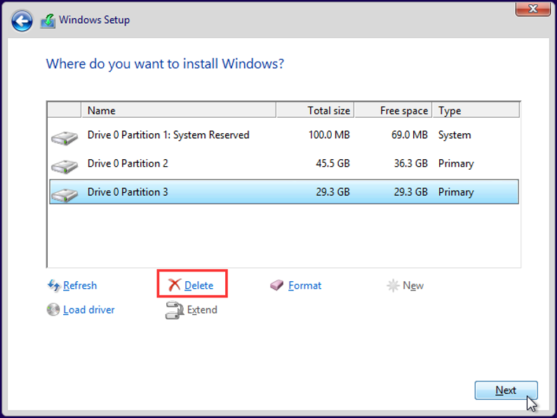
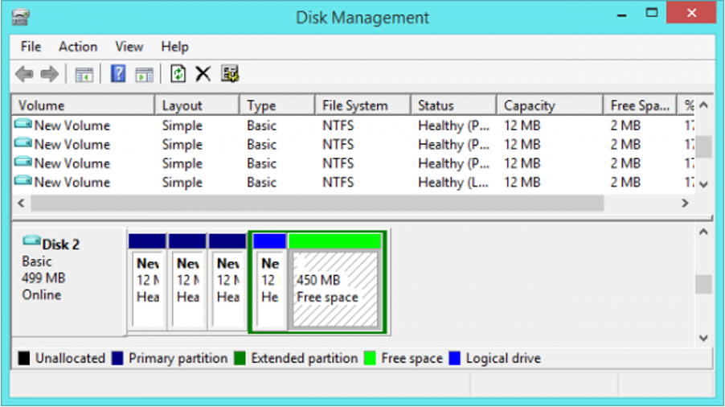
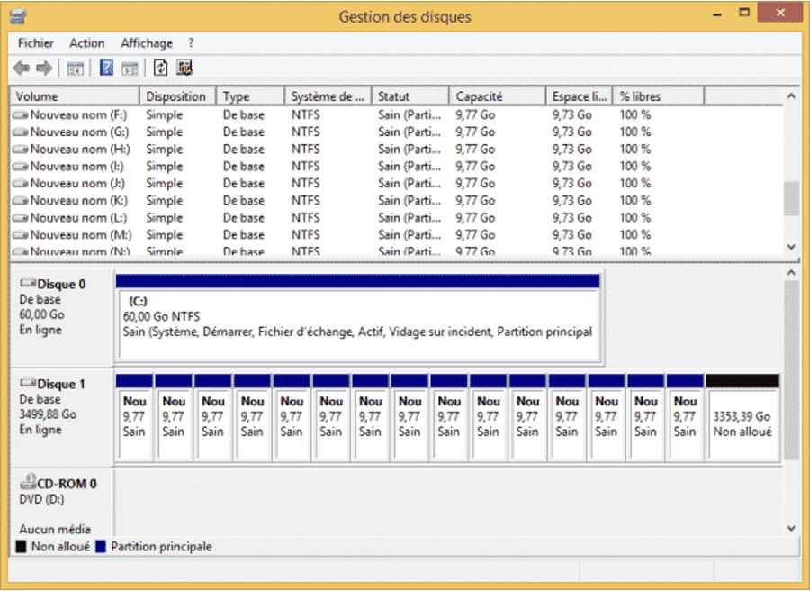
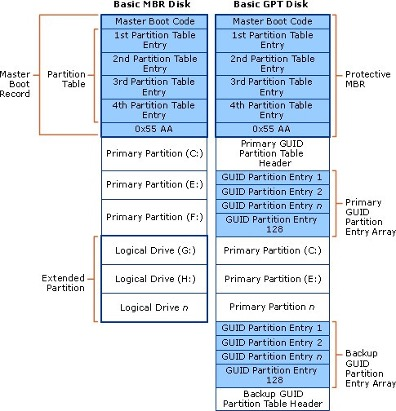

Disk Partitions
Partition styles, disk types and volumes
2025-11-16
Disk Partitions: MBR and GPT
Windows Disk Settings
When Windows is installed, it automatically prepares the primary disk. When a new disk is added, you must:
- Select a partitioning style (MBR or GPT).
- Select a disk type (basic or dynamic).
- Divide the disk into partitions or volumes.
- Format the partitions or volumes with a file system.

Selecting a Partition Table Style
- The partition table describes the partitions on a disk.
- If the partition table is lost, users can no longer read data from the disk or write new data to it.
- There are two partition table formats:
- Master Boot Record (MBR): used with legacy BIOS
- GUID Partition Table (GPT): used with UEFI
Master Boot Record (MBR)
- The standard partition table format since the early 1980s.
- Common partition style for x86- and x64-based computers.
- Maximum: 4 partitions
- Maximum size: 2 TB per partition

GUID Partition Table (GPT)
- The successor of the MBR partition table format.
- Introduced in the late ’90s.
- Most operating systems now support GPT.
- Maximum: 128 partitions
- Maximum size: 18 exabytes per partition

GPT vs. MBR
| MBR | GPT |
|---|---|
| Supports up to 4 primary partitions, or 3 primary partitions and 1 extended partition with unlimited logical drives on the extended partition | Supports up to 128 primary partitions |
| Supports volumes up to 2 TB | Supports volumes up to 18 exabytes |
| Hidden (un-partitioned) sectors store data critical to platform operation | Partitions store data critical to platform operation |

CMD Command: DISKPART
diskpart is a command-line tool for managing disks. The list disk command shows every disk, its size, and whether it is dynamic (Dyn) or uses GPT (Gpt).

list disk in DISKPARTDisk Types
| Basic Disk | Dynamic Disk |
|---|---|
| Compatible with older operating systems | Supported by Windows 2000 and later |
| Consists of primary and extended partitions | Does not use traditional partitioning |
| Supports up to 4 partitions (per hard drive) | Allows disk and volume management without restarting the computer |
| Can combine two or more physical disks into one dynamic disk | |
| Divided into volumes (not partitions) |
Partitions with MBR and GPT

Top: primary and extended partitions on a basic disk using MBR. Bottom: primary partitions on a basic disk using GPT.
Primary vs. Extended Partitions
| Primary | Extended |
|---|---|
| Looks like a physically separate disk. Can host an operating system. | Cannot host an operating system |
| Can be marked as an active (bootable) partition | Cannot be marked as an active partition |
| On a basic MBR disk, you can create up to 4 primary partitions, or 3 primary partitions and 1 extended partition | A basic MBR disk can contain only 1 extended partition, but unlimited logical drives |
| You format each primary partition and assign it a unique drive letter | You do not format the extended partition itself, but the logical drives it contains. Each logical drive gets a unique drive letter |
Disk Imaging and Cloning
Disk Image
A disk image is a complete copy of a computer disk, stored as one large compressed file. It includes:
- System files
- Device drivers
- Installed applications
- User profiles and data
A disk image can be deployed on a new disk if:
- The old disk malfunctions.
- You upgrade to a new disk (larger or faster).
Once the image is deployed, the new disk can be placed in the computer and you can carry on working with all your applications and data. However, you lose any data and changes made after the image was created.
Example
You want to replace your disk with a larger one. You create a disk image and save it to an external drive. Afterwards, you remember you need to edit some photos, so you install Photoshop, download the photos, and save them to the disk. While you are working, the system disk fails because of a hardware issue. You install a new disk and deploy the image on it. Photoshop and the downloaded photos will not be there, because they were added after the image was created.
Disk Cloning
Disk cloning copies the contents of a computer disk to another disk (or to an image file). A clone includes:
- Hidden files
- Files that are currently in use
- Deleted files (how is that possible? See Deleting Files.)
In cloning, the hardware must be identical. What happens if the disks are not the same size?

Cloning copies one disk to another
Imaging vs. Cloning
Both methods create an exact replica of your hard drive, including files, the master boot record, applications and the OS. Both are a full system backup.
- Cloning: an exact copy of everything on the disk, bit by bit.
- Imaging: creates one single compressed file containing everything.
If your hard drive dies:
- You can simply swap it with a clone (disk).
- An image must first be deployed on a new disk before you can go back to work.